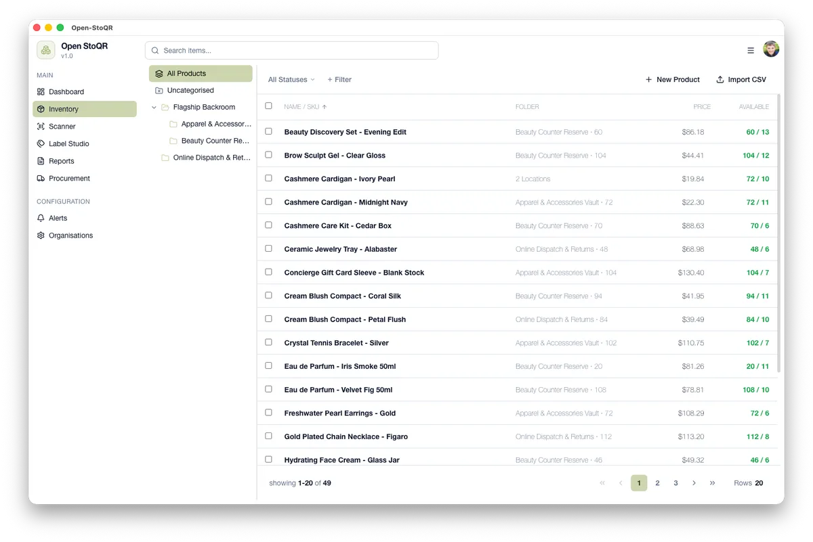

Verify complete journeys early.
A large test count can hide integration failures. Next time I will keep a small acceptance path working throughout development.
Benefit at work: more reliable releases.Capstone project video
Customer-controlled inventory software for small and medium-sized businesses
Chu-Cheng Yu · Design capstone · 2026
01 / Why this project
Project question
Can one self-hosted platform keep inventory workflows together while giving the customer control of the system and its data?
Target users: SMEs with suitable infrastructure or technical support.
02 / What I built

Identity, organisations, invitations and roles
Products, scanning, stock movements, purchasing and reports
Common interface and organisation model in one monorepo
Product screen uses synthetic data.
03 / Methodology
Turn the SME problem into traceable requirements.
Compare architecture and technology against weighted criteria.
Deliver in iterations with review and quality gates.
Reset synthetic data and repeat security and browser tests.
The project needed both a working system and evidence that its design meets the stated requirements.
04 / Architecture
Custody finding assumes a safe customer site and optional outbound connectors disabled or governed.
05 / Main findings
A$0 refers to the software subscription. Hosting, backups and administration still have costs.
06 / Contribution
Open-SE brings shared identity, inventory workflows, tenant isolation and customer-run deployment into one tested design.
The evaluation used synthetic data; production readiness remains future work.
07 / What I learned
A large test count can hide integration failures. Next time I will keep a small acceptance path working throughout development.
Benefit at work: more reliable releases.Security, data custody and cost each need a defined boundary. I learned to record limitations and turn feedback into testable actions.
Benefit at work: clearer decisions and accountability.Thank you.